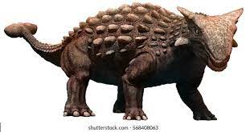
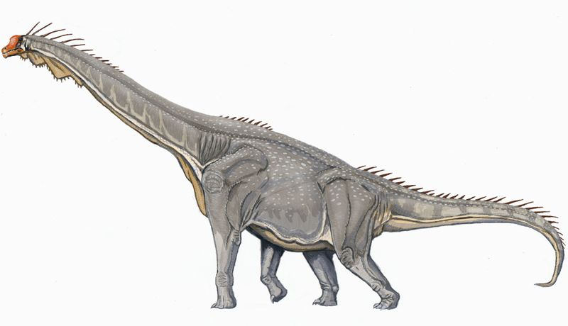
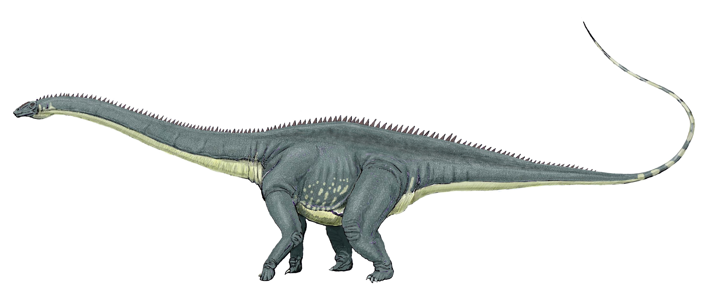
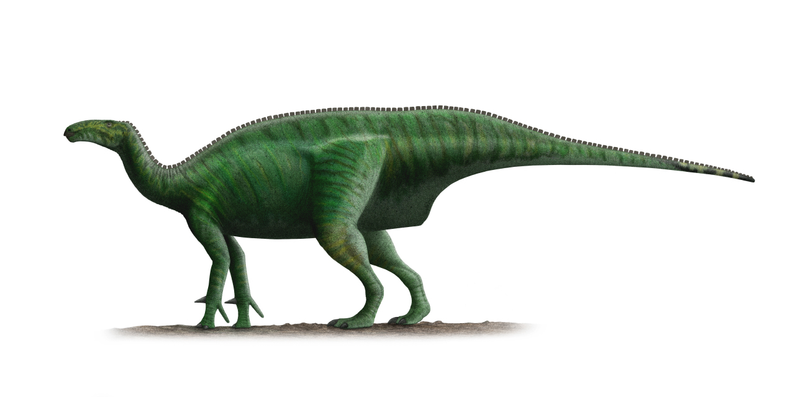
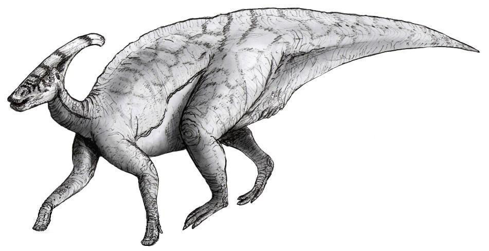
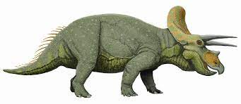
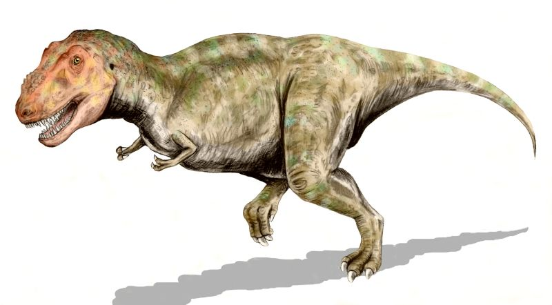

Sommaire
Les dinosaures sont un groupe d'animaux, qui rassemble aujourd'hui tous les oiseaux. Mais autrefois, il a existé d'autres dinosaures, cousins des oiseaux, qui pouvaient être très différents et qui ont aujourd'hui disparu. On les connaît cependant grâce à leurs fossiles. Parmi ces dinosaures disparus, beaucoup ne ressemblaient à aucun autre animal connu sur Terre ; certains étaient énormes et c'est même parmi les dinosaures que l'on trouve les plus grands animaux terrestres de tous les temps. Depuis très longtemps, les dinosaures font rêver les scientifiques et les passionnés, qui découvrent leurs fossiles et qui cherchent à savoir à quoi ressemblaient ces animaux.
Que sont les dinosaures ?
En classification phylogénétique, les scientifiques définissent les dinosaures comme le groupe formé par l'ancêtre commun du moineau et du tricératops et tous ses descendants. Pour simplifier, le moineau et le tricératops sont tous les deux des dinosaures, très différents, tellement différents que leur ancêtre commun est aussi celui de tous les dinosaures. Ainsi, tout animal plus proche du tricératops et du moineau que de n'importe quel autre animal est un dinosaure.Ainsi, le petit moineau, de l'ordre des saurischiens, est plus proche génétiquement - plus «cousin» - du tyrannosaure que le crocodile, qui est effectivement aussi un archosaure, mais pas un dinosaurien.
Les dinosaures au cours du temps
Les dinosaures sont apparus il y a environ 230 millions d'années, au Trias. Durant le Mésozoïque, beaucoup de dinosaures ont disparu et d'autres sont apparus, si bien qu'il en a existé un grand nombre de sortes différents, mais pas toujours en même temps.
C'est au cours du Trias, il y a 230 millions d'années, que les premiers dinosaures apparaissent. Les plus anciens dinosaures connus sont des théropodes, des petits dinosaures carnivores bipèdes, comme le coelophysis ou l'hérrérasaure et des prosauropodes, des animaux beaucoup plus lourds, probablement herbivores, au cou allongé.
Il y a 200 millions d'années, le Triasest remplacé par le Jurassique. Durant cette période, qui va durer environ 55 millions d'années, les dinosaures vont se diversifier et de nouveaux groupes et de nombreuses espèces, vont apparaître. On connaît également, à cette époque, les premiers dinosaures véritablement géants, mais aussi des dinosaures plus petits en très grand nombre.
Le Crétacé commence il y a 145 millions d'années. Les dinosaures les plus célèbres datent de cette époque, comme le tyrannosaure, ou le tricératops. En fait, bon nombre de dinosaures du film Jurassic Park datent plutôt du Crétacé… Il existe encore de très grands dinosaures au Crétacé, mais aussi beaucoup de dinosaures plus petits. Parmi eux, des oiseaux étonnants font leur apparition, comme l'ichthyornis, un oiseau marin, très bon nageur, mais incapable de voler…
Le >Paléogène est la première période de l'ère tertiaire, ou Cénozoïque. Il commence à la fin du Crétacé, il y a 65 millions d'années et se termine il y a 23 millions d'années. À la fin du Crétacé, la plupart des dinosaures ont disparu, seuls les oiseaux ont survécu. Parallèlement, les mammifères, qui existent depuis le Trias, c’est-à-dire depuis aussi longtemps que les dinosaures, ont également survécu. Au début du Paléogène, alors que beaucoup d'espèces viennent de disparaître, les oiseaux et les mammifères sont les espèces les plus abondantes et elles vont rapidement évoluer pour coloniser la Terre entière. Des oiseaux géants apparaissent, qui vont rapidement prendre la place de leurs cousins disparus, les grands dinosaures carnivores.
Le Néogène est la période actuelle. Il commence il y a 23 millions d'années. Durant tout ce temps, de nombreux oiseaux sont apparus et ont disparu. Aujourd'hui, on connaît environ 10 000 espèces d'oiseaux, soit près du double du nombre de mammifères : difficile donc de dire que les dinosaures ont disparu ! Il existe une très grande variété d'oiseaux, très différents. Avec le temps, ils se sont adaptés aux milieux les plus divers.
Ankylosaure
Herbivore
Crétacé
Brachiosaure
Herbivore
Crétacé
Diplodocus
Herbivore
Crétacé
Iguanodon
Herbivore
Crétacé
Parasaurolophus
Herbivore
Crétacé
Stégosaure

Herbivore
Crétacé
Tricératops
Herbivore
Crétacé
Tyrannosaure
Herbivore
Crétacé
Vélociraptor
Herbivore
Crétacé